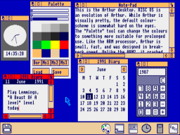

Multitasking
In informatics (also known as computer science), multitasking is a method that allows multiple tasks to be completed in the same period of time. The tasks share the processing ressources of the computer. A multitasking OS is a system where multiple programs can run at the same time.
The first occurrence of “multitasking” dates back to the 80s. Multitasking is very common today even if we may not necessarily notice it.
1981 Xerox Star
1981 Xerox Star Without the advantage of hardware interrupts, its designers supported an event-driven interface by creating a multitasking architecture. Needs to be corrected!
Apple Lisa
In 1983, Apple Lisa was developed for the same reason as Xerox Star - to create an office computing system. The OS used a multitasking GUI to interact with the user.
Apple Machintosh 128k
Conveiced in 1984, Apple Machintosh 128k was the first Machintosh. It used a graphical user interface instead of a multitasking command-line interface.
IBM TopView
The 1984 IBM TopView is a text-mode PC DOS, multitasking and object-oriented windowing environment.
Atari TOS/GEM
In 1985, the Atari TOS/GEM was created. The TOS desktop used icons to represent files and devices, and windows to display information. It also used files to execute determined actions, like a command-line.
Amiga 1000
The 1984 Commodor Amiga 1000 can display multiple screens at different resolutions on a single monitor, all at the same time.
Windows 1.0
In the 1985-87 version of Windows 1.0, multitasking was limited by the MS-DOS programs but with version 2.1, multitasking became truly accessible. It allowed several MS-DOS programs to run in parallel without suspending background applications.
NextStep
The 1989 NextStep, developed by NeXT Computer, is an object-oriented and multitasking OS. It was notably a preeminent implementation at the time. Its toolkit offered a lot of power and was used to build every program on the machine. NextStep used the C language. Because of this and its powerful tool-kit, NextStep quickly became a reference for programming.
External Links
- [Visited on 01/11/2014] History of multitasking
- [Visited on 01/11/2014] Multitasking
- [Visited on 01/11/2014] Xerox Star
- [Visited on 01/11/2014] Next
- [Visited on 01/11/2014] multitasking
- [Visited on 01/11/2014] Apple Lisa
- [Visited on 01/11/2014] IBM Top View>
- [Visited on 01/11/2014] Windows 1.0
- [Visited on 01/11/2014] NeXTStep>